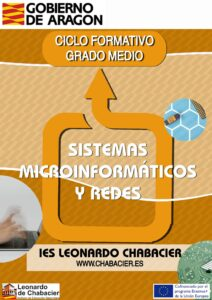

CFGM: SMR (Sistemas Microinformáticos y redes)

Asignaturas 1º año
· Montaje y Mantenimiento de equipos
· Sistemas Operativos Monopuestos
· Aplicaciones Ofimáticas
· Redes Locales
· Formación y Orientación Laboral
· Inglés
Asignaturas 2º año
· Sistemas operativos en red
· Seguridad Informática
· Servicios en red
· Aplicaciones Web
· Empresa e Iniciativa Emprendedora
· Inglés
· FCT (Tercer Trimestre)